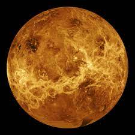
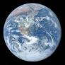
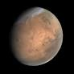
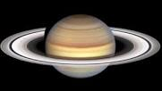
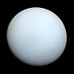
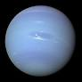

Mercury, the sun's nearest neighbor, is a puzzle of extremes. Its rocky surface is scarred by ancient impacts and
dramatic temperature swings. With a thin atmosphere that can't hold heat, Mercury's days scorch and nights freeze.
Scientists are intrigued by its unusual features, like icy spots in shadowy areas and a surprisingly large metal core.
This tiny, enigmatic planet provides big insights into the forces shaping our solar system.
Venus: Earth's Hot Mystery

Venus, Earth's sibling in space, is an intriguing planet with extreme conditions. Its thick atmosphere traps heat,
making it scorching hot – even hotter than Mercury. The surface hides under heavy clouds, but radar shows mountains,
volcanic plains, and big craters.
Venus teaches us about the greenhouse effect, where gases in the air trap warmth. Its wild winds and odd rotation also
make it stand out. While we've sent missions to Venus, there's still a lot we don't know. Its super-hot temperatures,
strange winds, and thick air keep scientists curious and eager to learn more.
Earth: The Blue-Green Jewel of the Cosmo

Earth, the third planet from the sun, is a unique and vibrant world that stands as a testament to the wonders of the
universe. As the only known planet to support life, it encompasses a stunning array of environments, from the depths of
its oceans to the heights of its mountains, and is teeming with a diverse array of life forms.
Mars: The Red Planet of Mysteries

Mars is the fourth planet. It's called the Red Planet because it looks reddish. It has deserts, big volcanoes, and a
huge canyon. Long ago, it might have had water. It has two small moons, Phobos and Deimos. Robots like Curiosity and
Perseverance have visited Mars to learn more. People want to go there too. Mars is interesting because of its red color
and its history with water.
Jupiter: The Majestic Giant of the Solar System
Jupiter, the biggest planet in our solar system, is a giant ball of gas with cool stripes and a humongous storm called
the Great Red Spot. It's like a mini solar system with over 80 moons, including big ones named Io, Europa, Ganymede, and
Callisto. Jupiter's strong magnet makes it special, and scientists send spacecraft like Juno to learn more about it.
This super-sized planet gives us clues about how planets are made and how they change over time.
Saturn: The Ringed Wonder of Space

Saturn is a big gas planet with amazing rings that sparkle around it. These rings are made of ice and rocks, creating a
dazzling sight. Saturn also has many moons. One of its moons, Titan, has lakes of methane. Another moon, Enceladus,
shoots out water vapor.
Scientists study Saturn's strong magnetic field and send spacecraft to learn more about it. The Cassini-Huygens mission
took close-up pictures of Saturn's rings and moons.
Saturn's rings and moons teach us about how planets and space work. Its beauty and mysteries make it a favorite in the
night sky.
Uranus: The Mysterious Ice Giant

Uranus is a faraway planet that's different from the others. It spins on its side and looks blue-green because of its
special air. It has thin, dark rings and some moons. Uranus is really cold and has strong winds. Only one spacecraft has
visited it – Voyager 2 in 1986. Even though it's far, Uranus keeps scientists curious about its secrets.
Neptune: The Distant Blue Giant

Neptune is a distant planet that looks blue because of its special air. It's windy and has big storms, like the Great
Dark Spot. It has thin rings and a big moon called Triton. Neptune is super cold and far from the sun. A spacecraft
called Voyager 2 visited it in 1989, and we're still curious about its mysteries.